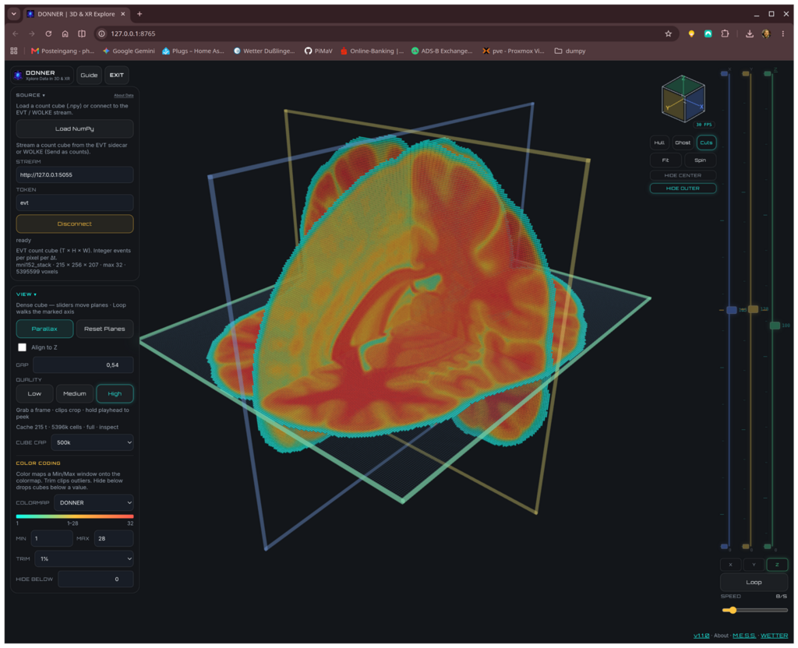
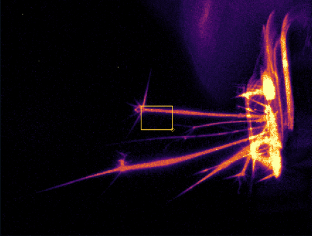
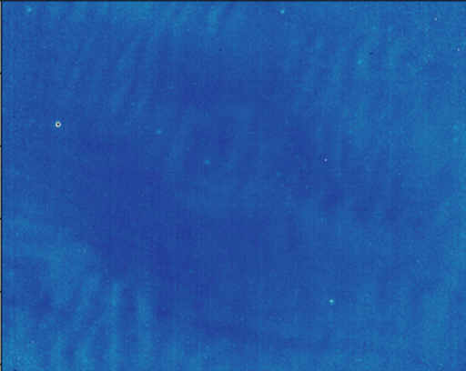
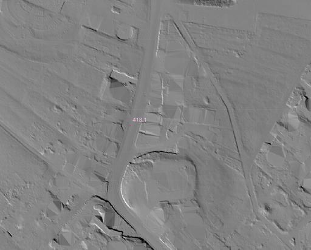
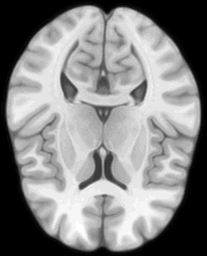
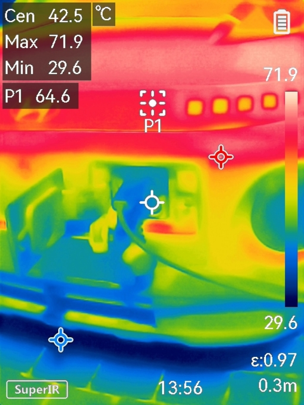
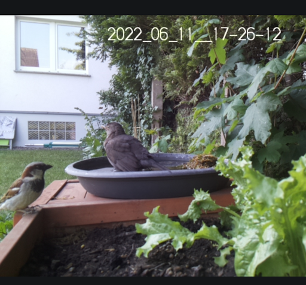
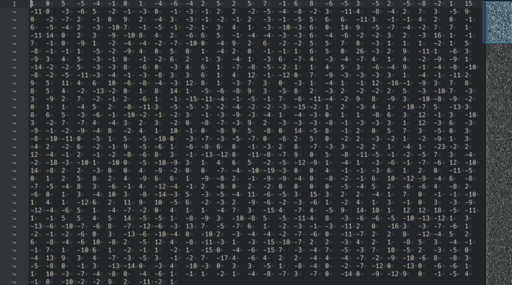

WETTER
Images aren’t just pixels—they are structured data.
Analyze scientific images and data in 2D, or explore them in 3D / XR. Drop raw files straight into the viewers — or take a curated or converted route when the dataset needs it.
Viewers
The core pair — 2D inspection and N-dimensional exploration

Curated route
Curated path
Build a browsable SQL image database, then filter into the viewers
Direct route
Direct from raw
Drop files or folders straight into BLITZ or DONNER — no pipeline required
Sidecars
Converted path
When the data needs a converter
Raw Data Ocean
(Scientific) images in all their glory; from JPEG/TIFF via NumPy to ASCII and more
Lab & scientific

Field & environment


Arrays & sensing




Three ways into the viewers: Direct white hops from the ocean, optional Curated (cyan after DAMPF → KEIM → WOLKE), or Converted (amber after a sidecar).
Scientific Imaging
Dataset Exploration
Knowledge Extraction
Image Analysis
Open Source